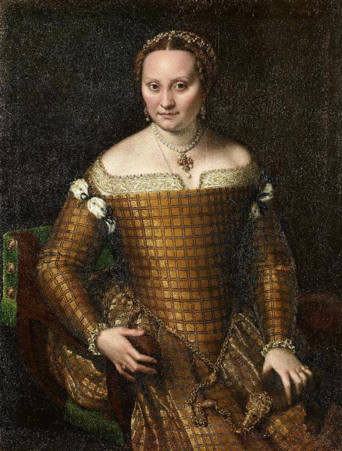
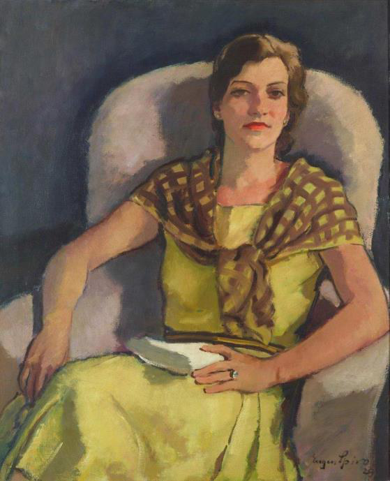

Zwei Frauenbildnisse im Vergleich – Sofonisba Anguissola und Eugen Spiro im Ausstellungskapitel „Familie, Freundschaft und Intimität“


In der Sonderausstellung „Porträts! Überraschende Begegnungen von Botticelli bis Lempicka“ (Gemäldegalerie, 16. Oktober 2026 bis 14. März 2027) hängen zwei Bildnisse einander gegenüber: Sofonisba Anguissola malte 1557 in Cremona ihre Mutter Bianca Ponzoni, Eugen Spiro porträtierte 1929 in Berlin seine Frau Elisabeth. Gut 370 Jahre liegen zwischen den Werken, und doch gleichen sie sich in Format, Haltung und Blick. Die Arbeit fragt, wie Malerin und Maler eine ihnen nahestehende Frau ins Bild setzen und was die Gegenüberstellung sichtbar macht.
Ausgehend von Lomazzos Verständnis des Porträts als Zeichensystem werden Gewand, Schmuck, Haltung und Lichtführung beider Bilder gelesen. Anguissola zeigt ihre Mutter als Matrone ihres Standes, bei der Brokat, Familienschmuck und Zobel Ehe, Wohlstand und Herkunft bezeichnen; Spiro zeigt seine Frau zurückgelehnt in einem privaten Augenblick, allein mit Ehering und einem Buch in der Hand. Am deutlichsten verschiebt sich die Bedeutung an eben diesem Buch: Anguissola gab es 1554 ihrem Selbstbildnis als unverheiratete Malerin bei, bei Spiro ist es das beiläufige Attribut einer Lesenden. Ein letzter Abschnitt fragt mit Wölfflin und Geimer nach Leistung und Grenzen des vergleichenden Sehens – und warum die Nachbarschaft zweier Bilder auch Ähnlichkeiten nahelegt, die historisch nichts miteinander zu tun haben.